satisfies the group axioms" becomes a mathematical statement about a pair (a structure, a set of formulas) rather than a description of what is written on the page – and statements about all structures satisfying a set of axioms become available.
satisfies the group axioms" becomes a mathematical statement about a pair (a structure, a set of formulas) rather than a description of what is written on the page – and statements about all structures satisfying a set of axioms become available.
A language (or signature)  consists of a set of constant
symbols, a set of function symbols and a set of relation symbols,
each function and relation symbol carrying an arity in
consists of a set of constant
symbols, a set of function symbols and a set of relation symbols,
each function and relation symbol carrying an arity in
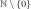
. The terms of form the smallest set
containing the variables 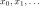
and the constant symbols and closed under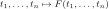
for each -ary function symbol
-ary function symbol  . The formulas of form
the smallest set containing the atomic ones –
. The formulas of form
the smallest set containing the atomic ones – 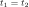
and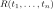
for an-ary relation symbol  –
and closed under
–
and closed under 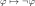
,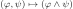
and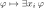
.
An -structure  is a non-empty set
is a non-empty set  , its
domain, together with an element
, its
domain, together with an element
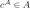
for each constant symbol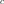
, a map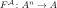
for each-ary function
symbol , and a subset 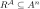
for each-ary relation symbol .
Let be an -structure. An assignment is a map
 from the variables to ; it extends to terms by
from the variables to ; it extends to terms by
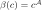
and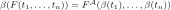
. Satisfaction is defined by induction on :
:
- iff
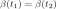
; 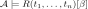
iff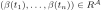
;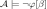
iff not ;- iff both hold;
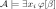
iff for some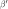
agreeing with off  .
.
A variable occurrence not inside the scope of a quantifier binding it is free; a formula with no free variables is a sentence.
If assignments and  agree on every variable free in
, then if and only if
agree on every variable free in
, then if and only if
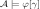
. In particular, whether a sentence holds in does not depend on any assignment.
First, if and agree on the variables occurring in a
term  , then
, then
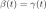
: true for variables and constants, and preserved by the clause for, so it holds for all
terms by induction on terms.
Now induct on . For atomic formulas the claim follows from
the statement about terms, since every variable of an atomic formula is
free in it. The cases of  and
and
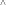
are immediate from the induction hypothesis, the free variables of the compound formula being those of its parts. For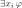
: the free variables of are those of together with
possibly . If with
agreeing with off , let 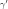
agree with off and take the same value as at
. Then and agree on all free variables
of , so 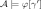
by induction, whence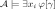
. The converse is symmetric.
An -theory is a set  of -sentences; a structure
is a model of , written
of -sentences; a structure
is a model of , written
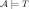
, if it satisfies every sentence of. A
sentence  is a consequence of , written
is a consequence of , written
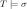
, if every model of satisfies .
 is a substructure of if
is a substructure of if
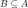
, contains every
contains every 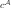
and is closed under every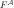
, and the interpretations of are the restrictions:
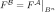
and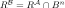
.
Let be a substructure of and
an assignment with values in . Then for every quantifier-free
,
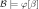
if and only if .
For a term with variables assigned in , induction on terms
gives
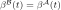
: the constants agree, and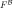
is the restriction of , which is where closure of is used. Atomic
formulas then agree because equality is the same relation and
, and the clauses for
and preserve the equivalence.
The proposition fails at the first quantifier, and that failure is the subject:
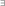
ranges over the domain, so a substructure can lose witnesses. The two-line proof marks exactly the boundary between the statements that are inherited by substructures – the equational axioms of algebra among them – and those that are not.